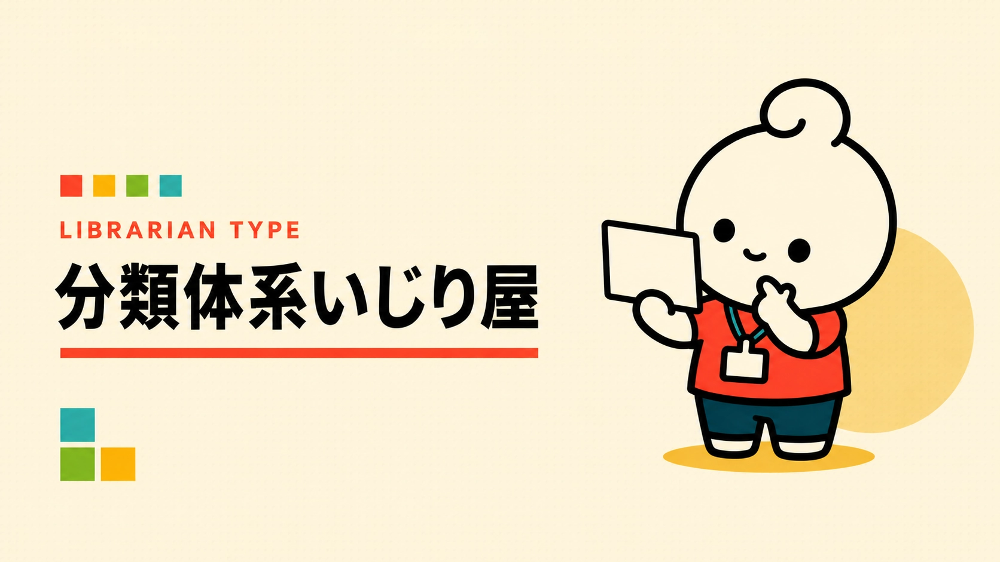

あなたの図書館員タイプは……
分類体系いじり屋

整理の方法そのものを、考えたい。
資料を整理するだけでなく、「この分け方、本当に一番分かりやすい？」と、分類の仕組みそのものを考えたくなるタイプ。
こんなこと、ちょっと好きかも
- 例外からルールを見直す
- 利用者の言葉と分類をつなぐ
- より納得できる仕切りを考える
※もちろん、だいたいです。
もう一度診断するYAWATOSHO GAMES / PICK 01
あなたにおすすめのYAWATOSHO GAME
GAME / 01
あなたの図書館員タイプは……

整理の方法そのものを、考えたい。
資料を整理するだけでなく、「この分け方、本当に一番分かりやすい？」と、分類の仕組みそのものを考えたくなるタイプ。
※もちろん、だいたいです。
もう一度診断するYAWATOSHO GAMES / PICK 01
GAME / 01